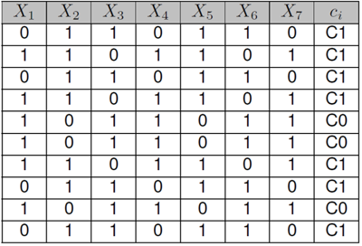
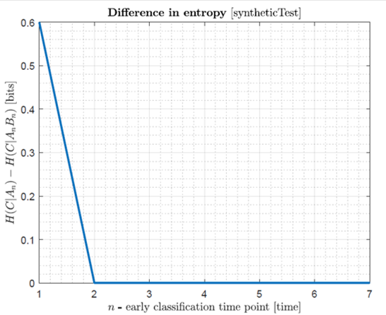
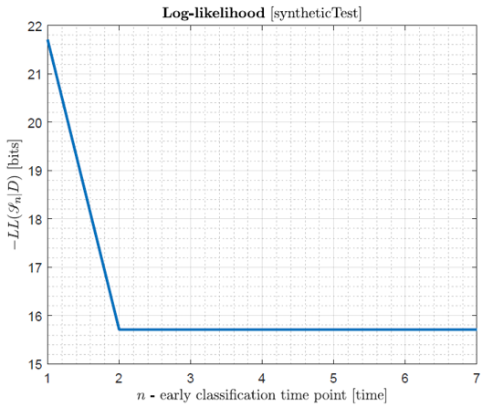
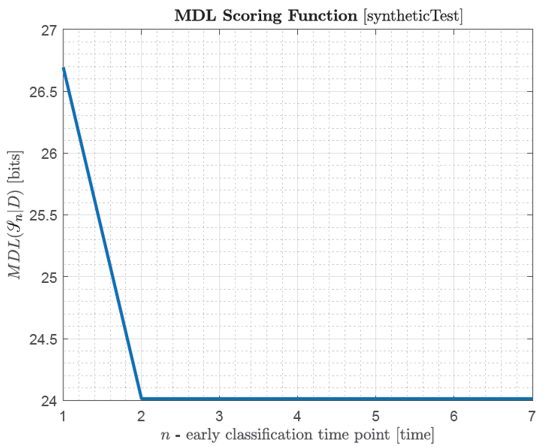
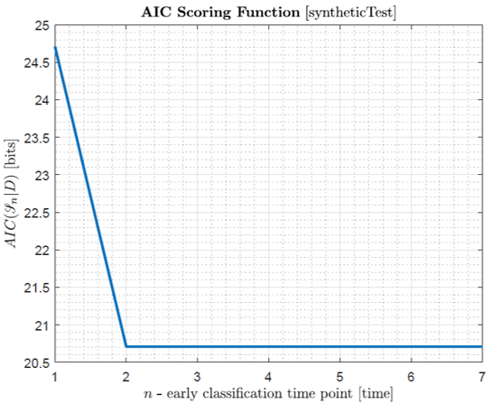
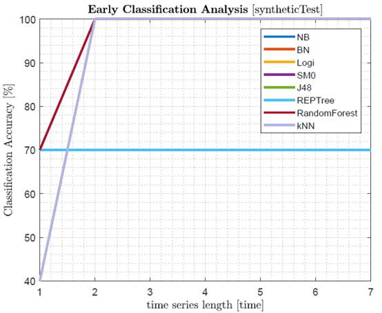

A Python implementation of a method that combines Temporal Needleman-Wunsch and aglomerative clustering.
AliClu is a Python implementation of a method that combines Temporal Needleman-Wunsch and agglomerative hierarchical clustering. The program receives a set of temporal sequences and outputs the final clusters. The python files required to run the program can be downloaded here.
$ pip install -r requirements.txt$ virtualenv [give_a_name]
$ source [give_a_name]/bin/activate #for a linux machine
$ [give_a_name]/bin/activate.ba #for a windows machine
$ pip install -r requirements.txt
The input file must be in comma-separated values (CSV) format, containing the time series and the respective class labels.
Dataset example:
X1_1, X2_1, X1_2, X2_2, class
TRUE, FALSE, FALSE, FALSE, C1
FALSE, FALSE, TRUE, FALSE, C0
TRUE, TRUE, FALSE, FALSE, C0
TRUE, FALSE, TRUE, TRUE, C1
(...)
The outcomes of the difference in entropy, log-likelihood, MDL score, AIC score and classification accuracy analysis, all for n = {1, ..., L} are outputted from the Java program in text files:
The file Appendix_SyntheticExampleOfMCECalgorithm.pdf includes a detailed explanation of the proposed method applied to a synthetically generated dataset. For clarification purposes, the functioning of the algorithm is expounded through calculation descriptions and graph analysis.
The proposed implementation provides the Markov Lag, an alternative to the standard Early Classification approach. Basically, instead of analysing the correlations from the initial time point until the last, it uses the inverse order (from the last to the first one). In this case, the idea is to check of how much information from the closest past we need, in order to obtain a satisfactory prediction.
MCEC algorithm depends on two external libraries:
Execute the jar file:
$ java -jar MCECalgorithm.jar [dataset-filename].csv [N] [optionClass] [MarkovLag]
[dataset-filename] Type: String - Name of the dataset file to be analysed.
[N] Type: Integer - Number of features per time point.
[optionClass] Type: Boolean - With classification analysis (TRUE)
or without classification analysis (FALSE).
[MarkovLag] Type: Boolean - With Markov lag approach (TRUE)
or with standard Early Classification (FALSE).
The very simple syntheticTest.csv dataset example is described in the following table:

The command for analysing the early classification opportunity is
$ java -jar MCECalgorithm.jar syntheticTest.csv 1 TRUE FALSEand produces the following files:




